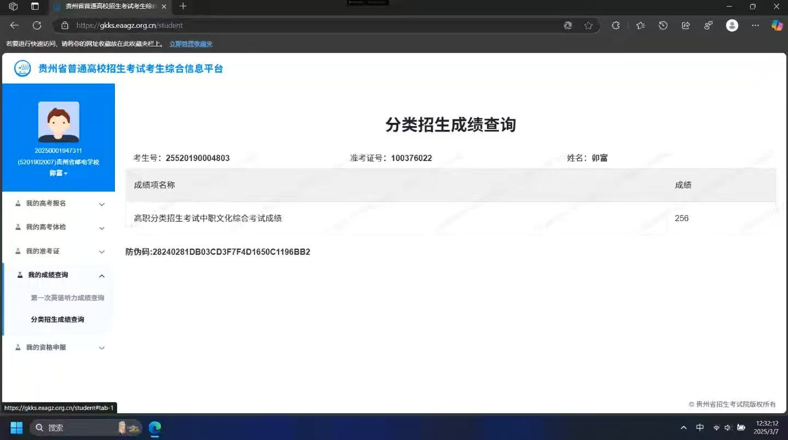
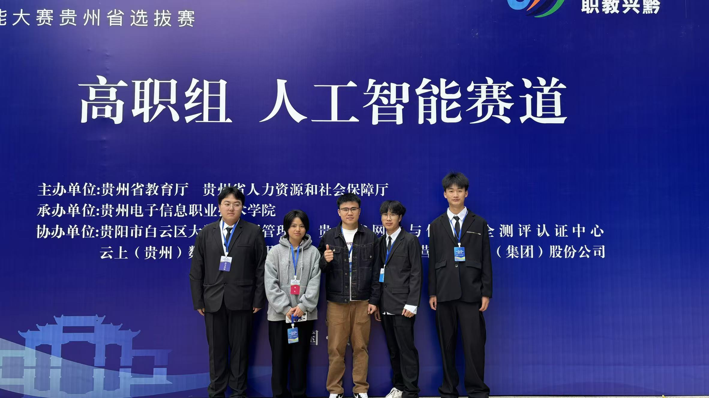

成长路径
基础构建期
第一阶段 · 夯实底层能力
- 精通 Python / C / Java 多门编程语言
- 掌握计算机网络、操作系统、数据结构核心知识
- 完成嵌入式开发与硬件驱动的入门实践
- 建立前后端全栈开发的完整知识框架
AI 转型期
第二阶段 · 深入大模型领域
- 系统学习深度学习基础与 PyTorch 框架实战
- 深入理解 Transformer 架构与注意力机制原理
- 掌握 RAG、微调、提示词工程等大模型应用技术
- 完成多个大模型落地项目，积累工程经验
架构进阶期
第三阶段 · 迈向应用架构师
- 攻克大模型推理优化、部署与性能调优
- 构建复杂 Agent 系统与多模态应用架构
- 沉淀企业级 AI 应用的架构设计方法论
- 形成从需求到落地的全链路技术方案能力
领域深耕期
长期方向 · 创造技术价值
- 垂直领域大模型应用深度探索
- AI + 硬件 / 边缘计算的结合创新
- 持续输出技术沉淀，形成个人影响力
🏆 成长印记

起点：高职分类招生考试成绩查询

赛场留影：高职组人工智能赛道
📚 知识体系覆盖
AI 算法层
- 深度学习基础理论
- Transformer 与大模型架构
- PyTorch 张量运算与训练
- 向量检索与语义匹配
工程落地层
- 大模型部署与推理加速
- 前后端全栈开发
- 数据库设计与优化
- 容器化与运维部署
硬件与底层
- STM32 嵌入式开发
- 硬件驱动与通信协议
- 芯片架构与性能选型
- 操作系统底层原理